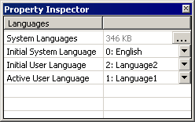
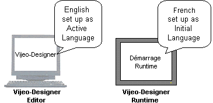
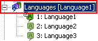
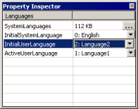
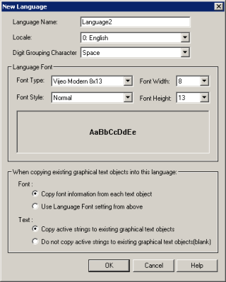
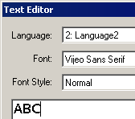
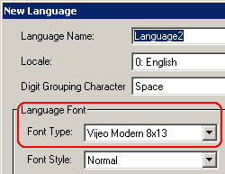
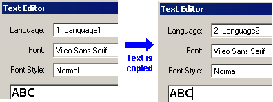
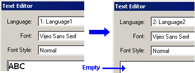

|
|
|
|
|
|
|
|
The Active User Language is the language that is displayed in the Vijeo-Designer Editor.
To select an active language:
In the Languages node's properties, language from the Active User Language drop-down list.

Vijeo-Designer's Active (editor) language differs from its Initial (run time startup) language. In the Navigator window's Project tab, the Languages node under the Environment node expands to display the project's languages and their functions.

If you want to specify the language that displays when run time starts up, set the initial language.
Double-click the Environment node, then right-click the Languages node and select Properties to display the Languages properties in the Inspector.

In the Property Inspector, specify in the InitialUserLanguage field the language that you want to display when run time starts up.

When you create a project, you work in a single language where you set up fonts and text in labels and text objects. When you add a new language to the project, your existing text objects can either: retain the original fonts and text, the text objects can use the new language's fonts and text.
When you add a new language, you can apply that language's font and text to the existing graphical text objects.
Double-click the Environment node, right-click the Languages node and click New Language to open the New Language dialog box.
Specify the new language's name, locale, default font type, style, size, and digit grouping character.

Select one of the copy options for the font and text information.
|
Copy font information from each text object. |
Copy font information from existing text objects into this language. This is the text object's default font, as specified in the object's Text Editor.  |
|
Use Language font setting from above. |
Copy font information from this language into all text objects. This is the new language's default font, as specified in the New Language dialog box.  |
|
Copy active strings to existing graphical text objects. |
Copy active text strings to existing text objects.  |
|
Do not copy active strings to existing graphical text objects (blank) |
Leave as is. Existing text objects will empty of all text.  |